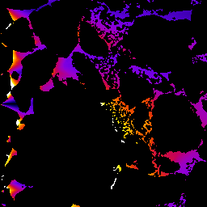
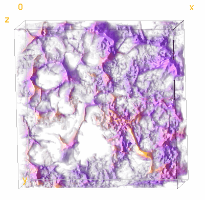
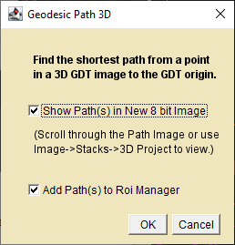
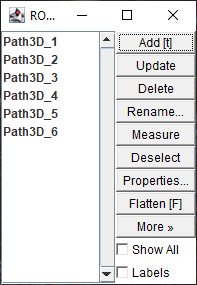

Geodesic Transform creates 2D and 3D geodesic distance maps by ordered propagation. See the DistanceMapLib page for more information.
Binarized Image(left), Geodesic Map Dialog(center), resulting GDT from left slice(right)
Geodesic Distance operates on 2D and 3D images that have been "binarized" into "zero" and "not-zero"(gray scale) domains.
Value To Process - Choose either "Map 0" or "Map !0" to select the range of image pixel values to map.
Process to run - Select "Geodesic Distance" or "Tortuosity".
Output - The pull down menu provides several options:.
3D new Image - creates a 3D GDT new output stack.
3D in Place - converts the current stack to a 32-bit 3D GDT
2D new Image - creates a new stack of 32-bit 2D GDTs
2D in Place - converts the current stack to a new stack of 32-bit 2D GDTs
2D this slice new image - creates a 2D GDT of the current slice
Seed - Compute distances from the following locations.
Left Slice - the GDT seed points are the entire left side of the 3D volume
Right Slice -
Top Slice -
Bottom Slice -
Front Slice -
Back Slice -
Point(s) - Use the ImageJ Roi Point tool to define one or more GDT seed points.
Use Pixel Sizes - Use the pixel/voxel dimensions when computing distances.
For tortuosity from a volume surface, the tortuosity is the GDT distance from the surface divided by the straight line distance from the surface.
For tortuosity from Point(s) sources,the tortuosity is the GDT distance from the nearest source point divided by the straight line distance from the nearest source point.
Tortuosity using the "Point(s)" option is relatively slow because the GDT is run twice.
Click OK to begin processing.
3D Tortuosity Example

Front slice from 3D ortuosity from left volume face 1(dark blue) to 1.75(white) Note the high tortuosity of voxels near but not directly connected to the seed face.

Tortuosity Visualization made with Volume Viewer 2.01
Geodesic Path 2D
Computes the shortest path between a selected point(s) and the seed location. It operates on 2D GDT images or stacks made with the Geodesic Transform plugin.
Geodesic Path 2D workflow Left to right: A left edge 2D GDT slice with a point selection, The dialog, Image with the shortest 2D path in overlay ,Roi Manager
Select a 2D GDT image or stack.
Use ImageJ's Point tool to select one or more(shift+click) points in the GDT domain. Points outside the GDT domain are ignored.
Run Geodesic Path 2D from the plugins->Flood_Tools menu.
Select one or both output choices. Click OK
Geodesic Path 3D
Computes the shortest path between a selected point(s) and the seed location. It operates on 3D GDT images or stacks made with the Geodesic Transform plugin.
Front 256x512 Slice from a 3D GDT from bottom slice. Distance scale 0(black) to 600(white) Points near the top of six arbitrary slices in the stack were selected.

Geodesic Path 3D Dialog
Select a 3D GDT stack.
Use ImageJ's Point tool to select one or more(shift+click) points in the GDT domain. Points outside the GDT domain are ignored.
Run Geodesic Path 3D from the plugins->Flood_Tools menu.
Select one or both output choices. Click OK
If the Add Path(s) to Roi Manager box is checked the indexed 3D path points are added to the Roi Manager.

Geodesic Path 3D ROIs
If the Show Path(s) in new 8 bit Image box is checked a new 8 bit image is created with the path voxels set to 100 plus the point selection index. Use Image->Stacks->3D Project or the Volume Viewer plugin to visualize the 3D paths.